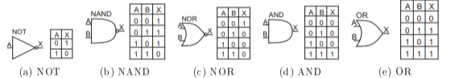
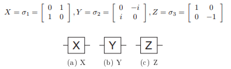
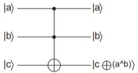

Portas
Nos computadores clássicos, o processamento da informação ocorre através de circuitos lógicos que são agrupamentos de portas lógicas as quais executam operações sobre bits. Para os circuitos clássicos, cinco portas lógicas são os principais blocos construtores. Tais portas obedecem a álgebra booleana e podem ter suas entradas e saídas descritas em tabelas, como a exibida abaixo:
Os circuitos da computação quântica também são agrupamentos de portas quânticas, as quais realizam operações unitárias sobre qubits. Assim, 12 portas quânticas podem ser vistas como operadores ou matrizes unitárias, este fato é de grande importância pois assim todas as matrizes unitárias 2×2 podem representar portas quânticas de um qubit. Como exemplo de portas quânticas temos as matrizes de Pauli, vistas em sua representação matricial e na figura abaixo:
O conjunto de portas quânticas que realizam operações unitárias sobre um qubit é infinito, pois as matrizes unitárias 2x2 são infinitas. Apesar de infinito, o conjunto de portas de um qubit não é universal, assim para realizar operações sobre qubits é necessário utilizar portas com mais de um qubit, como as portas quânticas CNOT e Toffoli, as quais realizam operações sobre 2 e 3 qubits respectivamente. CNOT ou NOT-controlado: A execução desta porta pode ser descrita da seguinte maneira: tendo o qubit |a> como o controlador da negação do qubit |b>, ou seja |b> será negado se e somente se |a> = |1>. Toffoli: Seu funcionamento pode ser da seguinte maneira: caso os qubits |a> e |b> sejam iguais a |1> o qubit |c> será negado.
Circuitos Quânticos
Deustch propôs em 1985 um modelo para computação quântica universal, seria o correspondente a Máquina de Turing(MT) para computação clássica:
Este modelo adicionava algumas características à MT, as quais permitia a representação de sobreposições. Porém o modelo inicialmente proposto era bastante complexo, assim Deustch criou representação mais simples para a computação quântica que era bastante semelhante ao modelo de circuitos clássicos. Por serem de fácil compreensão os circuitos quânticos vem sendo cada vez mais utilizados. Alguns circuitos quânticos são: Circuito Swap e Circuito somador de 2 bits.